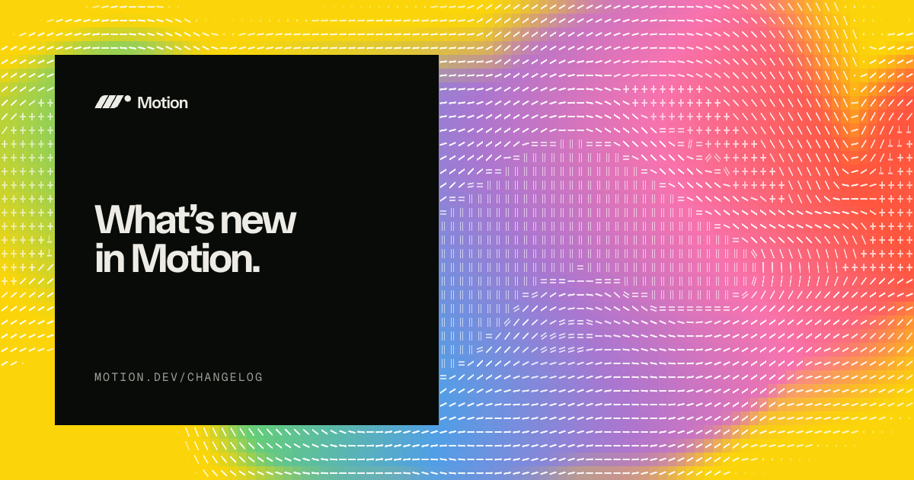
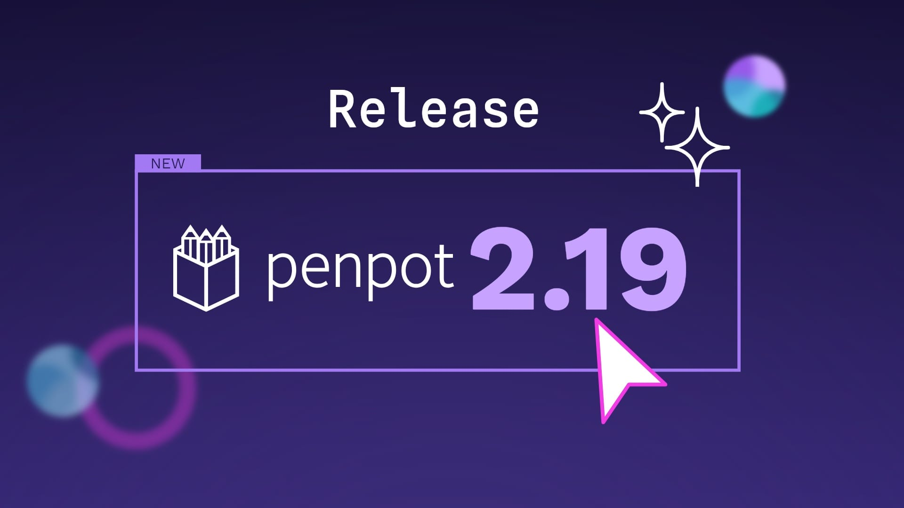
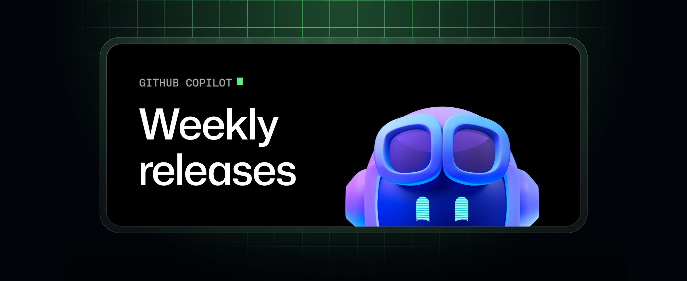
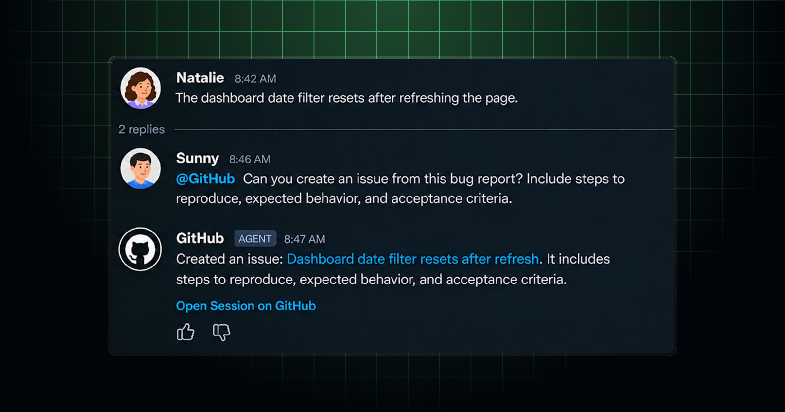
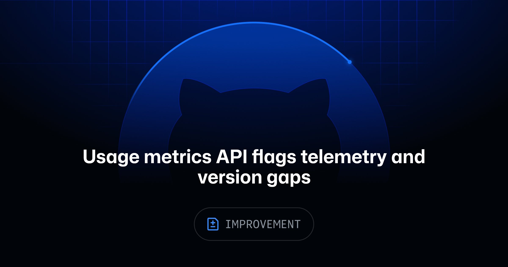
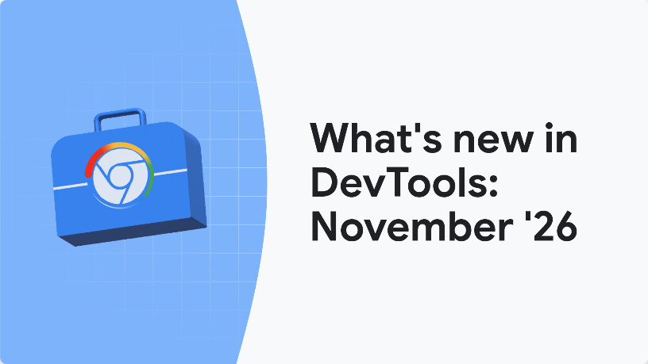
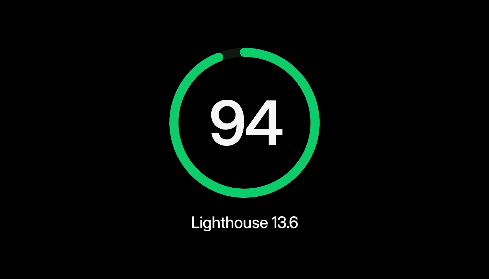
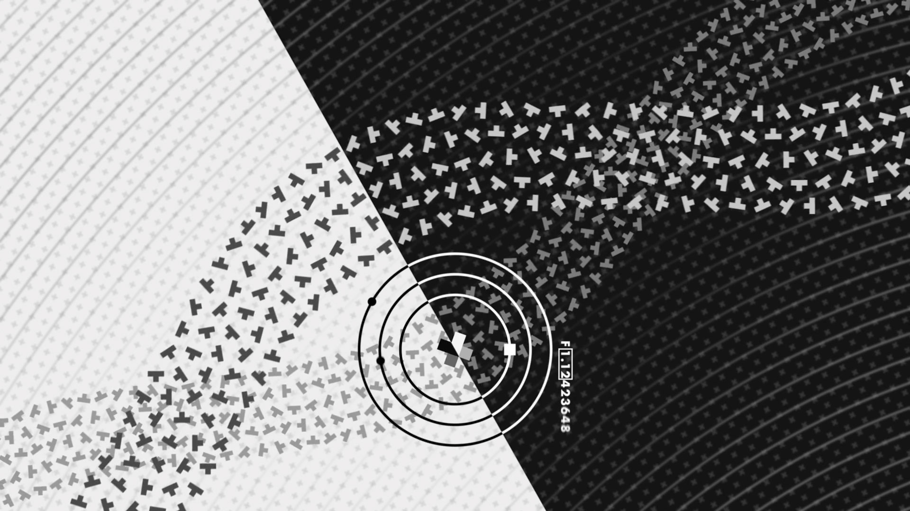

这周最有意思的变化，不是 Agent 又多会了一项，而是产品开始补“人怎么验收它”：GitHub 把上下文、预览、归因和缺失 telemetry 摆到台面上；Chrome 把 CSS 与 anchor positioning 做成可读的调试界面；Motion 连长按、多击和键盘重排都补成了正式能力。
生成速度已经够快，下一轮差距会出在可审阅、可访问、可归因。设计稿能不能带着规则走进实现，Agent 做错时能不能追到源头，指标少了一块时产品敢不敢写明“拿不到”，这些比再做一层魔法光晕实在得多。

Motion 14.10.0 给 press 增加 count、hold、repeat，覆盖双击、三击、长按和连续按压；drag 补了 headless 的 x / y 跟踪，Reorder 也支持用 Home / End 把选中项移到首尾。
这不是花哨动效包，反而在补交互的“第二种入口”。同一个收藏动作若既支持双击又支持长按，视觉、触觉、键盘和无障碍提示得一起定；否则组件 API 很完整，产品语义仍然是碎的。还没实测移动端冲突和 screen reader 宣告，先不替它下稳定性结论。

Penpot 2.19 允许把 design tokens 放进共享 library，连接文件会像组件和颜色一样同步更新；矩形与 board 支持四边独立 stroke，快捷键能重绑、导出和导入。WebGL renderer 继续加速画布与导出，但仍要在设置里手动开启。
最该试的是 token library，不是新描边。只要多个文件真能共享一份 DTCG 语义，设计系统就少一层复制粘贴；但灰度发布也说明 renderer 还没到全员默认。先拿一个非核心项目测大文件、文字锐度和导出差异，再谈迁移。

这次周更把交付链补得很密：PR 里可直接设置 Agent Merge、追 reviewer 状态；会话触顶后可以 compact；CSV / TSV 以带 sticky header 的表格打开；VS Code 的 Agents 窗口能预览远程 App 和 interactive canvas，本地 automation 也支持 cron 与 workspace custom agent。
真正值得产品团队记住的是“预览与审阅被放回 IDE”。Agent 生成一个界面后，讨论不必退回纯文本日志。但个人 assisted approval 是 opt-in，远程预览也还是 preview；把这两项写成默认能力，会直接制造权限误判。

@GitHub 在 Slack 和 Teams 正式 GA：能从群聊调查 bug、建 issue、实现修改并开 PR；Teams 里的 Canvas 可以并排看计划、代码变化和 preview。它还会从消息里判断 repository，生成的 issue / PR 描述会写清来自哪段对话与哪位用户。
群聊终于不再只是一张“需求截图”，但自动判断仓库不能替代确认。最小可用的交付卡至少要露出 repository、branch、发起人和将要执行的动作；四项有一项藏在折叠里，协作越顺，误投项目的代价越高。

Copilot usage metrics API 新增 client_telemetry_present 和 usage_metrics_requirements，能指出谁没有上传客户端 telemetry、谁的 IDE 或扩展低于最低版本。日报还有两个受影响人数，但同一人可能同时落进两组，不能相加；null 或字段缺失也不等于零。
这类“数据为什么不完整”比又一张 adoption 曲线重要。团队周报应该先列测量覆盖，再谈利用率；否则禁用 telemetry 的人、被代理拦住的人和真正没使用的人，会被压成同一个假结论。

Chrome 155 / 156 这批 DevTools 更新，给 coding agent 增加 get_css_styles：分页返回 matched / inherited rules、伪元素、@keyframes、@position-try 等信息；Elements 面板则加入可视化 position-area 编辑器、anchor overlay，以及 @starting-style 的 inactive 状态提示。
这解决的是“截图看起来不对，但 Agent 不知道哪条 CSS 真在生效”。把 computed style、继承链和 anchor 区域都变成结构化证据后，调试终于不用靠反复截图猜。不过这是 Chrome 当前工具链能力，不是所有浏览器都已经实现对应 CSS；生成代码仍要回到兼容性表。
Google 新整理的 Modern Web Guidance 明说是写给 coding agent 的。目录不只教卡片和下拉菜单，还覆盖高对比度 scrollbar、动态背景文字对比、canvas 内容暴露给辅助技术、viewport-aware dropdown、二维平移、进入 / 退出 top layer 的动效，甚至 WebMCP。
这套目录比“帮我做个高级感页面”靠谱，因为每个模式都带状态与边界。可惜指南仍偏 Chrome 视角；把它接进项目规则之前，最好给每条再补 browser support、reduced motion 和键盘验收，避免 Agent 把示例当跨端保证。

Framer 与 Lighthouse 团队修了两类模拟误判，其中一项是 Lantern 过去把高优先级 preload、web font 和 module script 猜成 render-blocking。13.6 改为读取 Chrome 的 renderBlocking 状态；Framer 抽样中，访问量最高的一组站点有 10% 提升至少 12 分，模板中 90 分以上的比例从 18% 升到 31%。
分数上涨不等于网站突然变快，恰恰说明评分工具也会错。性能验收要同时保留 lab score、真实用户数据和关键页面录像；只追一个绿色圆环，可能把时间花在修测试，而不是修体验。

视频：Vimeo 原片https://vimeo.com/1243482011｜来源：Stash 文章https://www.stashmedia.tv/take-a-break-from-festive-feels-and-get-lost-in-renaud-hallees-new-short-film-plus/｜制作：Possible Metrics｜时长：7 分钟
《PLUS》不是靠剪辑把漂亮镜头接起来，而是把加号、减号、圆、网格、准星和数字锁进同一套时间系统。黑白平面先建立秩序，颜色、深度与近似 3D 的空间感再慢慢进入；声音不是铺底，而是在决定图形何时出现、复制、翻面和退场。七分钟还能不显得像同一套 loop，靠的是规则持续变形，不是每十秒换一种风格。
Renaud Hallée 说得很坦白：画面和声音分别在 After Effects、Reaper 完成；前期想避开脚本以保留手工判断，复杂度上来后仍大量用脚本管理元素和解决技术问题，最后一段若重做会改用专门 3D 软件。这个边界比“全自动生成”更有参考价值——先手工找节奏，再把重复劳动交给脚本，工具选择跟复杂度走。
下一条品牌或产品 hero video 可以先做 15 秒测试：只定 5 个符号、1 套坐标和 1 条节拍曲线，手工完成第一轮；当复制、延迟和相位开始拖垮时间线，再脚本化。若 15 秒已经靠转场遮错，扩成一分钟只会更乱。
11 月 8 日晚到 9 日早上，Stash feed 新增一条《PLUS》；其余最新项没有制作方补充，不重复拆旧片。
@GitHub 从群聊判断 repository 的确认界面，以及 conversation → issue / PR 的归因是否可审计。@GitHub 群聊交付、Copilot telemetry 缺口、Chrome DevTools、Modern Web Guidance、Lighthouse 13.6。1243482011；Stash 文章、Vimeo oEmbed 与 1920px 制作画面交叉核验。飞书预检时 player URL 返回 401，按 fallback=image 降级为 Stash 静态图，并保留 Stash 与 Vimeo 两条链接。核验说明：Motion、Google Chrome、Framer、GitHub、Penpot、Vimeo 与 Stash 官方页面于 2026-11-09 回读。正文 9 张配图原始宽度为 816–2400px，已逐张目视检查；飞书 player 预检返回 HTTP 401，已按规则降级为 Stash 静态图，原片链接继续保留。